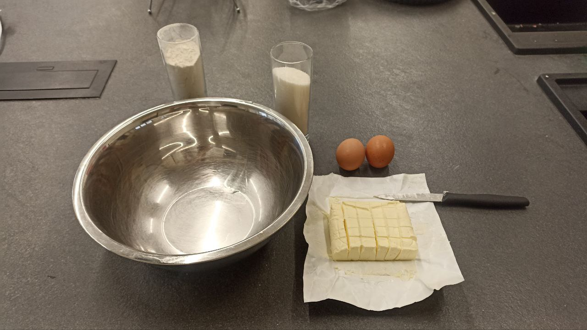
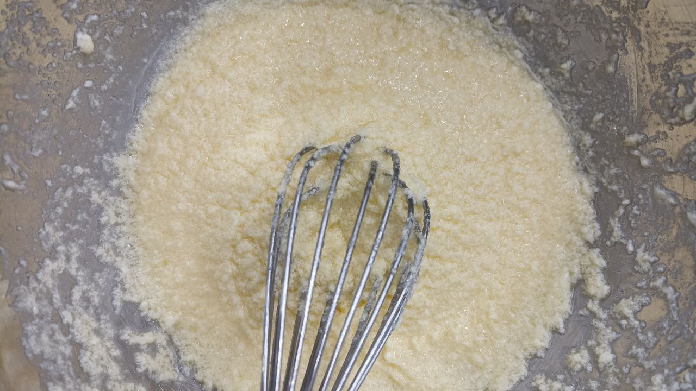
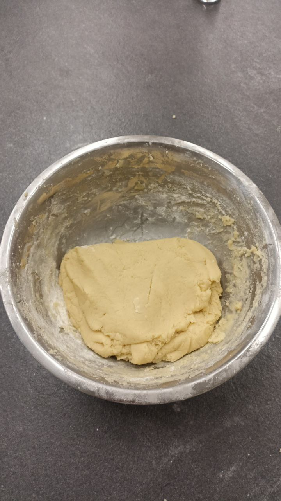
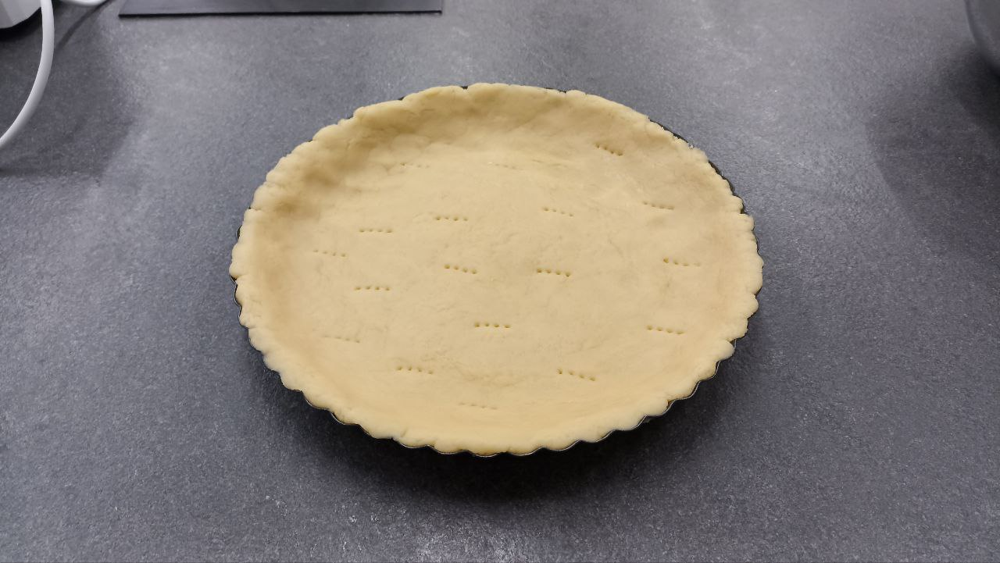
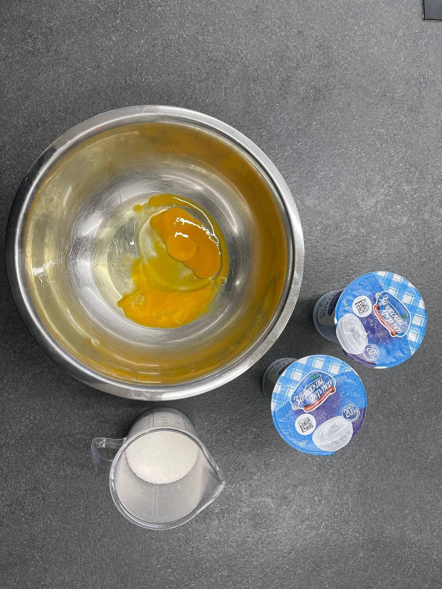
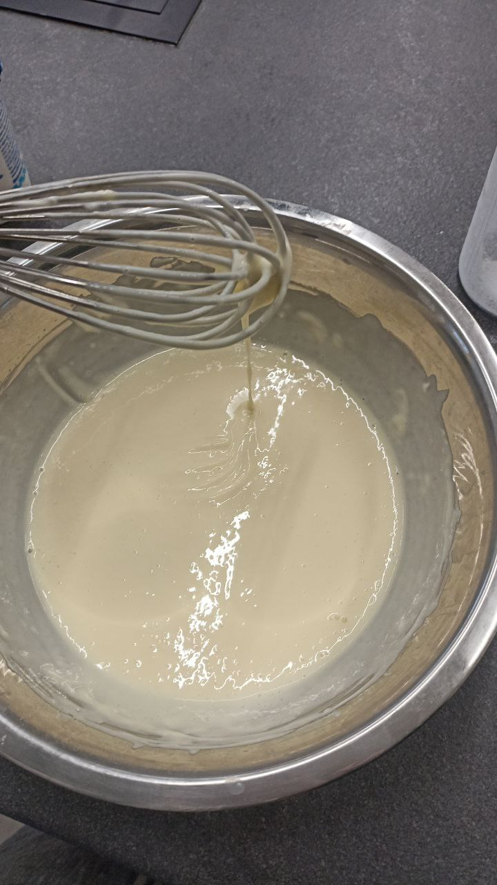
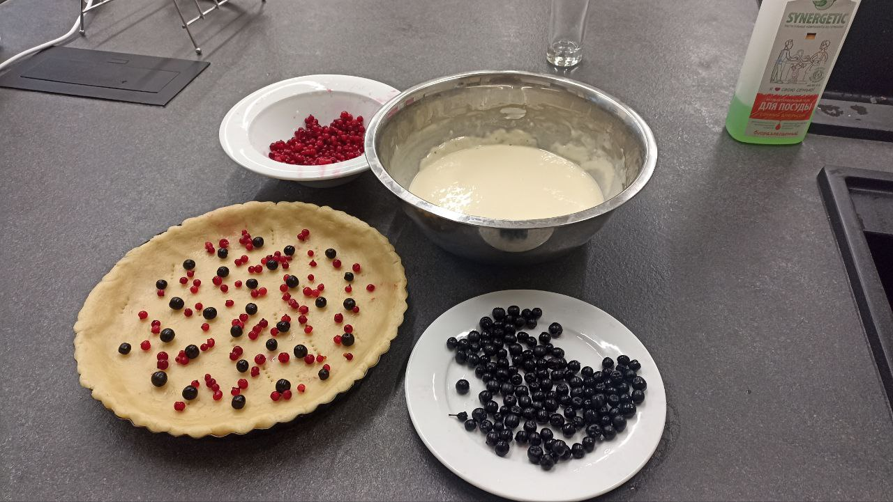
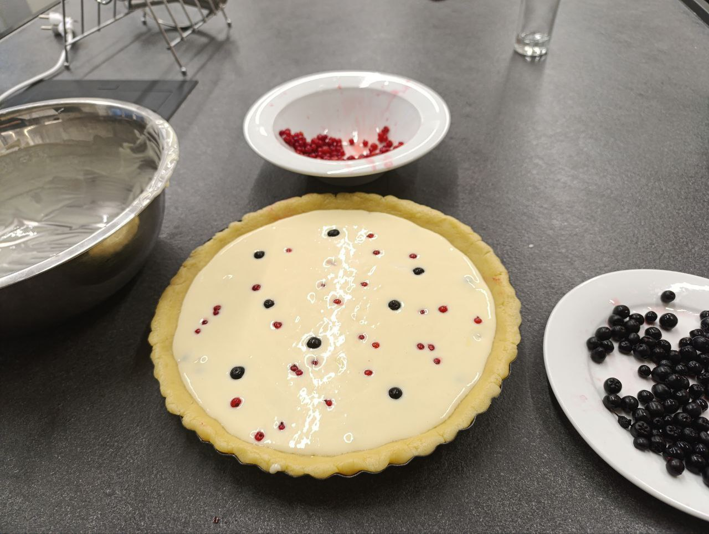
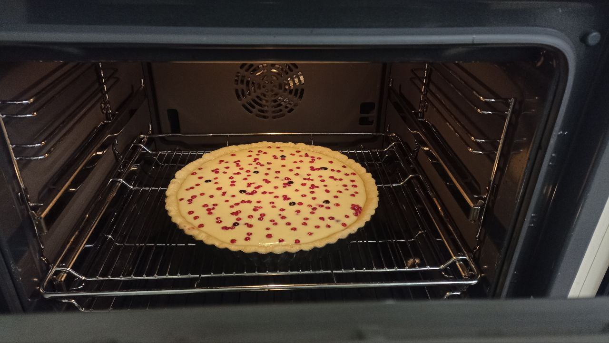
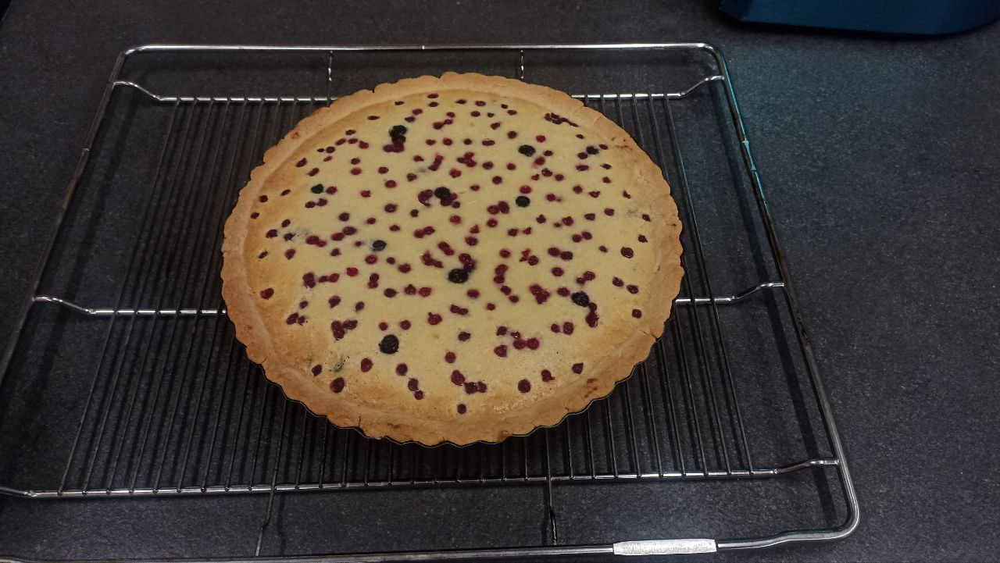

1. Если ягоды у вас замороженные: Ставим их размораживаться в тёплую воду, пока делаем тесто.
2. Подготавливаем ингредиенты для теста: Смешиваем яйца, сахар и подтаявшее масло комнатной температуры, но не топлёное.
3. Тщательно перемешиваем до консистенции: как на фото. Далее добавляем муку и замешиваем руками тесто.
4. Добавляем муку: до консистенции, как на фото. Тесто должно быть мягким, эластичным и не липнущим к рукам.
5. Распределяем тесто по форме: Пальцами так, чтобы оно доходило до краёв бортиков, и накалываем его вилкой. Убираем форму с тестом в холодильник на время, пока будем делать заливку.
6. Подготавливаем ингредиенты для заливки: Соединяем сметану, яйца и сахар.
7. Муку добавляем постепенно: через ситечко. Заливка должна получиться консистенции кефира.
8. Достаем форму с тестом из холодильника: Хаотично выкладываем туда немного размороженных ягод.
9. Заливаем форму с тестом: и сверху кладём ещё ягод.
10. Ставим в заранее разогретую до 180°C духовку: Примерно на 40 минут. Ждём, пока тесто затвердеет до состояния печенья, а заливка подрумянится и станет плотной.
11. Вынимаем готовый чизкейк: Охлаждаем его перед подачей. Приятного аппетита!
